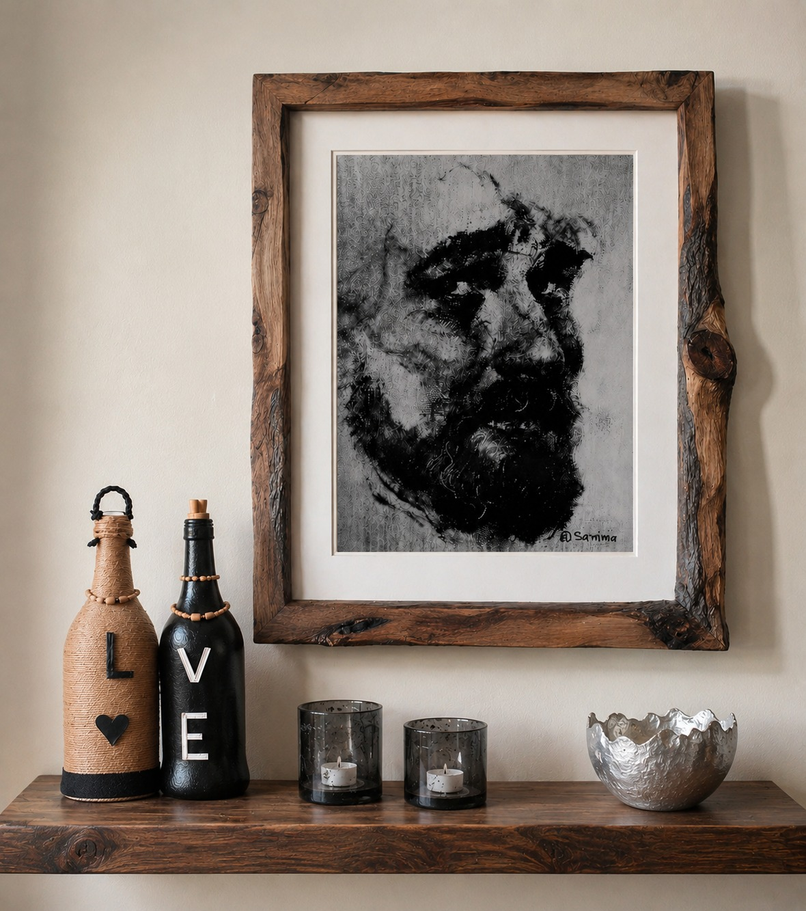
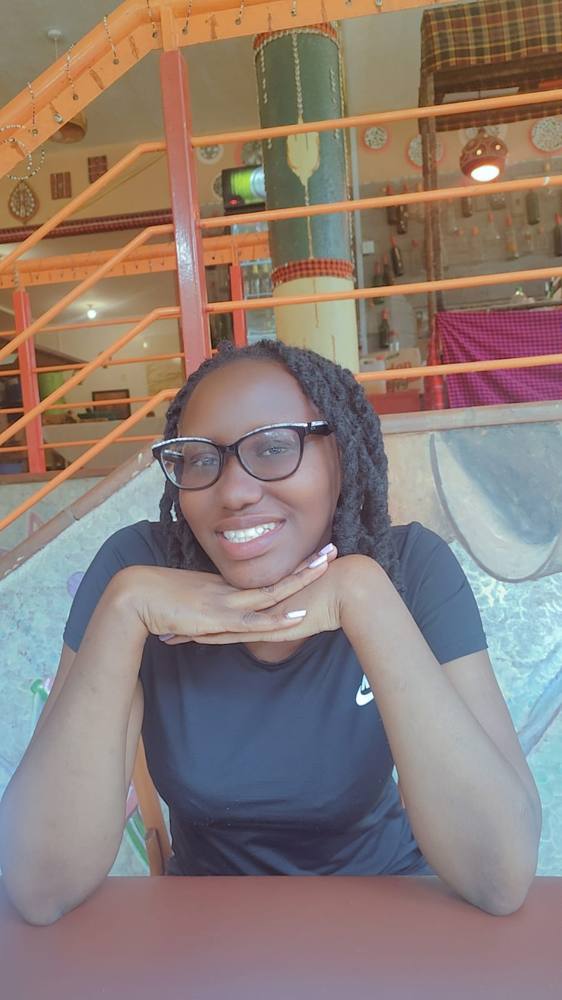

The work began with a pull toward colour, texture and the stories a blank canvas can hold nothing more deliberate than that at first. Over time it grew into a daily practice and then into a body of work.
Working from a home studio in Nairobi, every piece here carries something real: a memory, a mood, a moment of ordinary life rendered closely enough to notice. Painting is treated less as performance and more as attention — a way of paying close attention to what's already there.
This site exists to share that practice honestly: finished paintings alongside sketchbook pages, framed pieces alongside works still in progress. Thank you for taking the time to look closely.
MUCASA STUDIO is a shared space, here's who else contributes to it.
Sarima Kennedy is a contemporary Kenyan artist whose work explores the intersection of culture, nature, and human experience. Working across painting and mixed media, he creates expressive pieces that tell meaningful stories through texture, symbolism, and bold composition. Alongside his artistic practice, he is a L.Architect and Junior Tutor at JKUAT, where design and creativity continue to shape his perspective.
I am an Actuarial Science graduate from JKUAT, a world of risk, probability and statistics. But when the textbooks close and the calculators fall silent, I pick up my brush and step into a world where numbers have no power and imagination reigns supreme. My work with MUCASA STUDIO is my sanctuary — a place where I can be both the actuary and the artist, the thinker and the dreamer. By career, I crunch numbers but by talent, I paint emotions.

I am a passionate poet with a deep appreciation for the power of words to inspire, heal and make people feel seen. Often times visual art does the same and thus I'm drawn to it. Like listening to music while reading a book can enrich the experience, i think poetry can do so to paintings. With a degree in Psychology, I am endlessly fascinated by the landscapes of the mind and the stories people carry within them. I understand that words are not just words but can lead to gentle opening of the soul or world shattering. I hope to approach every piece with compassion, curiosity, and a deep reverence for human emotion. I hope I'll be able to see the elephant swallowed by a boa constrictor.